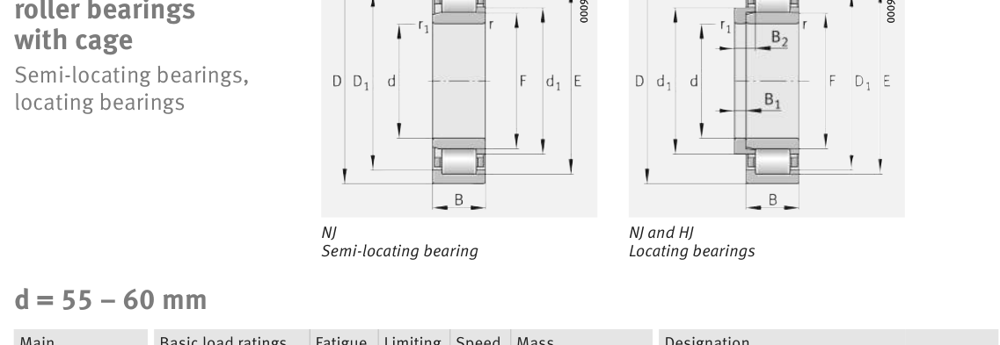

Original catalogue drawing - FAG Schaeffler HR 1, page 458

Scanned from the manufacturer catalogue page listing this part number. All part numbers printed on that table share the same drawing.
Scale cross-section
Blue = inner / outer ring, yellow = rolling element. Drawn to scale from this part's own
dimensions for selection reference only - not a manufacturing or assembly drawing.
Dimension table (mm / inch)
Symbol
Dimension
mm
inch
d
Bore diameter
60
2.3622
D
Outside diameter
110
4.3307
B
Inner-ring / bearing width
28
1.1024
r
Chamfer (min)
1.5
0.0591
E
Roller-set outside dia.
100
3.937
F
Roller-set bore dia.
72
2.8346
Notes
Weights are given in kg. Load ratings are shown in both the original catalogue units and the converted value (1 N = 0.2248 lbf). Data is provided for selection reference only - confirm against the latest official catalogue before ordering.
Main dimensions
Bore d (mm)
60
Outside dia. D (mm)
110
Width B (mm)
28
Inner-ring OD d1 (mm)
77.6
Inner-ring shoulder dia. D1 (mm)
96.1
Dimension E (mm)
100
Dimension F (mm)
72
Dimension s (mm)
1.6
Load ratings & speeds
Basic dynamic load rating Cr (lbs)
34171
Basic static load rating Cor (lbs)
34396
Basic dynamic load rating Cr (N)
152000
Basic static load rating C0r (N)
153000
Fatigue limit load Cur (N)
27500
Limiting speed nG (rpm)
7,700
Reference speed nB (rpm)
4,300
Weight
Weight (kg)
1.1
Mounting dimensions (fillets / shoulders)
Housing fillet r max (mm)
1.5
Chamfer r1 min (mm)
1.5
Shaft shoulder da (mm)
69
Shaft shoulder dc (mm)
80
Housing shoulder Da (mm)
101
Housing fillet ra max (mm)
1.5
Bearing life (ISO 281 basic rating life)
C / P
Equivalent load P (N)
L10 (106 rev)
L10h at 2,500 rpm
4
38,000
102
677
6
25,333
392
2,617
8
19,000
1,024
6,827
10
15,200
2,154
14,363
15
10,133
8,323
55,490
Basic rating life per ISO 281: L10 = (C/P)10/3 with C = 152,000 N. Hours = L10 x 106 / (60n). Life-modification factors for lubrication, contamination and temperature (aISO) are not included.
Source & traceability
Brand
FAG
Source catalogue
FAG / Schaeffler Rolling Bearings HR 1
Catalogue page
p.458 (dimensions)
Load ratings in newtons, fatigue limit load Cur, limiting speed nG and reference speed nB.
Send us the quantity you need and we will come back with price and
lead time, normally within 24 hours. Equivalent parts from other brands can be quoted at the same time.